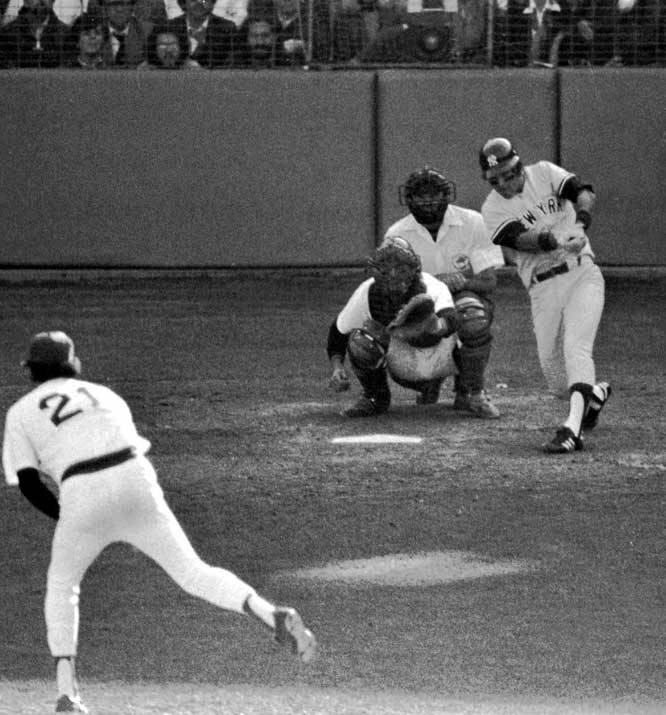

The miracle of 1978. I watched it on TV and thought the heavens had cracked open and spilled out a dose of impossible goodness. End of the baseball season; Yankees and Red Sox tied for first place in the AL East. A one game tie-breaker to see who goes to the playoffs. Yankees down 2-0 late in the game, looking hopeless. Bucky Dent, the weakest hitter on the team, hits a monstrous home run to give the Yankees the lead and the eventual win.